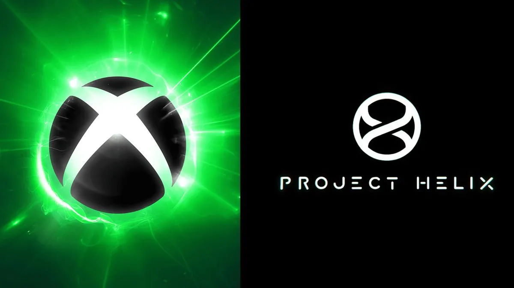
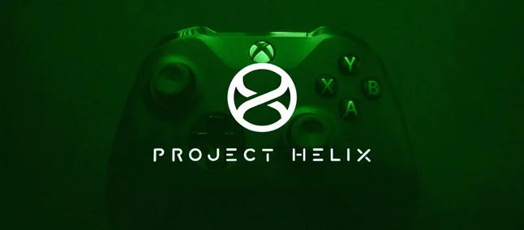

Xbox anuncia seu console de nova geração: Project Helix
Publicado em: 06 de Março de 2026

Empresa anunciou de surpresa nesta quinta-feira (05) o novo console
É oficial: a Microsoft acabou de balançar o mundo dos games. Sob o comando da nova CEO da Microsoft Gaming, Asha Sharma (que assumiu após a aposentadoria de Phil Spencer), foi anunciado o Project Helix, o codinome do console de próxima geração do Xbox.
As informações oficiais ainda são iniciais, mas os pilares do Project Helix já foram estabelecidos:
Ecossistema Híbrido: O grande diferencial será a capacidade nativa de rodar tanto jogos de Xbox quanto jogos de PC. Isso sugere uma integração profunda com a Windows Store e, possivelmente, outras lojas de PC.
Foco em Performance: Sharma afirmou que o hardware será projetado para "liderar em desempenho", posicionando-o como uma máquina de ponta para competir com o futuro PS6 e com as novas Steam Machines.
A "Volta do Xbox": A liderança descreveu o projeto como um compromisso com o "retorno do Xbox", reafirmando que a Microsoft não pretende abandonar o hardware próprio, apesar dos rumores recentes de uma guinada apenas para o software.
Novo Logotipo: Um teaser revelou o logo do projeto: uma hélice dupla que forma a letra "X", simbolizando a união dos mundos de console e computador.
Ao permitir jogos de PC nativos, a Microsoft resolve um dos maiores dilemas dos jogadores: a escolha entre a praticidade do console e a biblioteca vasta do PC. Se o Project Helix conseguir entregar uma interface simplificada (como o "Modo Game" do Windows) com o poder de um PC de última geração, ele pode mudar a forma como entendemos o hardware doméstico.

O que podemos esperar do novo hardware?
O console, supostamente, será alimentado por um novo AMD APU sob codinome Magnus, composto por dois chiplets, um SoC com arquitetura Zen 6 e um GPU baseado em RDNA5.
O processador contará com até 3 núcleos Zen 6 + 8 núcleos Zen 6c, compartilhando 12 MB de cache L3, enquanto o GPU trará 68 unidades de computação e 4 motores de sombreamento, com 24 MB de cache L2, cinco vezes mais em comparação ao Series X.
A memória ainda não foi detalhada, mas poderá ser configurado com 24 GB, 36 GB ou 48 GB de RAM, e o barramento será de 192 bits. O APU Magnus também contará com um NPU de 110 TOPS (trilhões de operações por segundo) voltado para tarefas de IA e upscaling de imagem, podendo operar em modo econômico de 46 TOPS.
O consumo total deve variar entre 250 e 350 watts, com ganho de desempenho estimado entre 30 a 35%, algo que resultar em taxas de quadros mais altas.